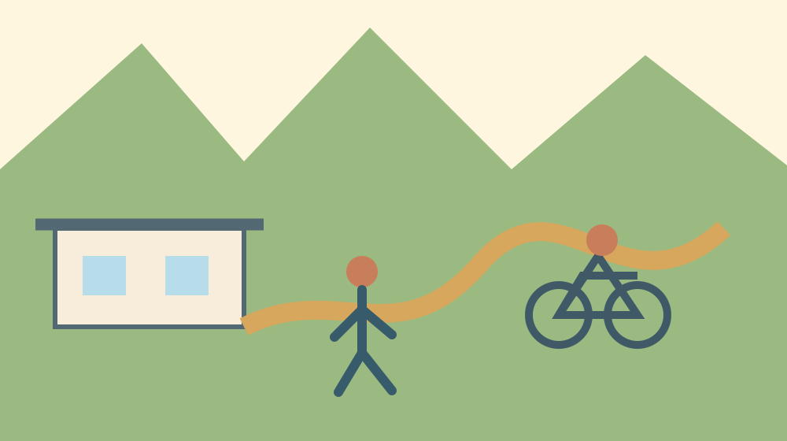
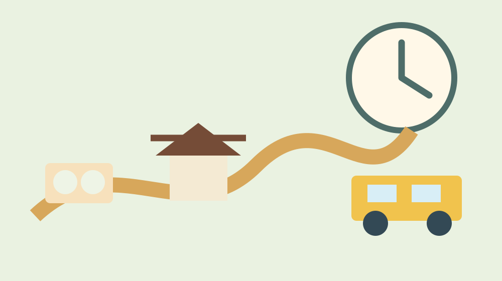

森町へのアクセス完全ガイド｜車・電車・バス別
森町へのアクセスは「最寄り駅」や「最寄りIC」を一つ覚えるだけでは決まりません。町内は南部の鉄道駅周辺から北部の山間地まで広がり、目的地によって最後の移動が変わります。到着より先に帰路を決め、公式時刻と現地の徒歩・運転条件を重ねるのが結論です。
1. 結論：目的地、最終区間、帰路の三つから選ぶ
アクセス計画で最初に書くのは交通手段ではなく、目的地の正式名称と住所です。「森町」「小國神社」「アクティ森」「森の町並み」は同じ地点ではありません。地図に目的地を置き、鉄道駅、バス停、インターチェンジから最後にどう移動するかを確認します。観光案内に載る所要時間は通常時の目安で、乗換待ち、駐車待ち、歩行、混雑、休憩を含むとは限りません。
次に、帰る時刻を固定します。鉄道やバスは往路より復路の選択肢が少ない時間帯があります。最終便だけを目標にすると、運休や見学の遅れに対応できません。一便前を基本案にし、乗り遅れた場合の次便、タクシー、家族送迎、滞在延長の可否を決めます。車でも、日没後の山道や祭礼後の一斉退出を避けるため、退出時刻を先に決めます。
最後に当日確認をします。気象、道路規制、鉄道運行、バス運行、施設営業、催事の交通案内の順です。検索結果に表示された時刻の断片ではなく、運行主体のページを開き、適用日、平日・土休日、改定日を見ます。PDFを保存していた場合も、古い版でないか公式入口から入り直します。
2. 天竜浜名湖鉄道で入る：駅名と目的地を分けて考える
天竜浜名湖鉄道の公式「運賃と時刻表」には、町内の戸綿、遠州森、森町病院前、円田、遠江一宮など、駅ごとの時刻表と運賃表への入口があります。掛川方面から入るか、新所原・天竜二俣方面から入るかで接続が変わります。JRから乗り換える場合は、JR到着から天浜線発車までの移動時間も確保します。
遠州森駅は町中心部を訪ねる入口として分かりやすい一方、すべての観光地の玄関ではありません。遠江一宮駅も、小國神社と同じ一宮地区にあるというだけで、駅を降りれば境内という意味ではありません。駅から目的地への徒歩距離、標高差、歩道、暑さ、荷物を地図と現地情報で確認します。名称の近さを距離の近さへ読み替えないことが大切です。
無人の時間帯や設備も想定します。切符や支払方法、トイレ、待合、駅からの連絡手段は駅ごとに同じとは限りません。公式の駅・時刻情報を確認し、必要なら鉄道会社へ問い合わせます。高齢者や小さな子どもと移動する場合、列車に乗る時間だけでなく、駅で待つ時間、ホーム移動、目的地までの休憩を足します。
列車で訪れる利点は、運転せず町の地形と集落の変化を見られることです。一方、途中の立寄り先を増やすと、一本の遅れが後半全体へ影響します。午前と午後に一つずつ主目的を置き、駅へ戻る時刻を紙にも控えます。スマートフォンの電池切れに備え、駅名と発車時刻、緊急連絡先を一枚にしておくと安心です。
3. 路線バス・町営バス：運行主体と利用日を確かめる
森町公式の公共交通ページは、森町営バスなど町内交通の公式入口です。町の地域公共交通資料では、天浜線のほか、町外と結ぶ路線バス、町営バスが地域の移動を担うと整理されています。観光客が利用できるか、予約が必要か、曜日で運行するか、運賃をどう支払うかはサービスごとに確認します。
町営バスの時刻表は改定される可能性があります。本ページへ個別時刻を転載すると古い案内が残るため、公式入口を案内します。PDFを開いたら「何年何月現在」か、路線名、行先、曜日、注記を読みます。同じ停留所名でも方向が違う場合があるため、帰りの乗り場を到着時に確認します。
秋葉バスサービスなど民間路線を使う場合も、経路検索だけで確定しません。運行会社の現行時刻表、運賃、運休情報を確認します。袋井駅、磐田方面など町外の鉄道駅との接続は、道路混雑で余裕が変わります。鉄道へ乗り継ぐ計画では、バス到着予定と列車発車の間を詰めすぎません。
小國神社は公式サイトに袋井駅と神社を結ぶ「小國神社・開運線」の案内ページを設けています。運行日や予約、時刻は神社公式の現行案内を確認してください。初詣など特別な時期の交通は通常期と異なる場合があります。前年の臨時便やSNS投稿を今年の運行情報として使わないことが重要です。

4. 車で入る：インターチェンジは目的地別に選ぶ
森町への広域道路の入口として、新東名高速道路の森掛川IC、遠州森町スマートICなどが使われます。どちらが最適かは出発地だけでなく、最初の目的地で変わります。スマートICにはETCなど利用条件があるため、NEXCO中日本の公式情報で対象車種、利用方向、閉鎖情報を確認します。「スマートICが近い」という不動産・観光紹介だけで経路を決めません。
町公式のアクティ森案内は、同施設までの目安として森掛川ICと遠州森町スマートICから各約15分、掛川ICから約40分、袋井ICから約30分としています。この数字はアクティ森が目的地の場合の案内です。小國神社、遠州森駅、森地区の町並みなど別地点へそのまま当てはめず、目的地公式の交通案内を確認します。
高速を降りた後は、山間部へ近づくほど距離と所要時間が単純に比例しない場合があります。道路幅、カーブ、工事、雨、落枝、対向車、農作業車を考えます。ナビが示す最短経路が、来訪者に推奨された道とは限りません。施設公式が案内する経路、道路標識を優先し、住宅地や農道へ無理に入らないようにします。
給油や充電、休憩も旅程の一部です。山側へ入る前に残量を確認し、目的地の充電設備を未確認で当てにしません。運転者が一人なら、到着地を増やすほど帰路の疲労が増えます。午後は帰る方向の目的地へ移る、夕方前に山側を出るなど、帰宅まで安全が続く順序にします。
5. 主要目的別の考え方：一宮、森地区、アクティ森
小國神社へ行く場合、神社公式の交通案内を出発直前に確認します。通常日の駐車や路線案内と、初詣・紅葉期の臨時対応は分けて考えます。駐車場の台数、入口、交通規制を口コミだけで確定せず、神社や関係機関の当年案内に従います。公共交通は行きの到着だけでなく帰りの乗車場所まで確認します。
森地区の中心部へは、遠州森駅を起点にする方法があります。町並み、役場周辺、文化会館など、どこまで歩くかを事前に地図で測ります。町並みは生活道路でもあるため、歩道のない区間では横に広がらず、撮影のために車道へ出ません。車の場合も、目的施設の駐車場を使い、空地や店舗の駐車場を町歩きのために無断利用しません。
アクティ森について町公式は、遠州森駅からアクティ森行きバス約17分という案内と、自動車のIC別目安を掲載しています。ただし、運行日や接続、体験受付は別途確認が必要です。予約した体験の開始時刻があるなら、受付時間から逆算し、バス遅延や駐車から受付までの歩行を加えます。
一日にこれら三地点をすべて入れると、車でも移動と乗降が多くなります。初訪問では二つまでにし、一方を長く見る方が現実的です。公共交通では一地点を中心にし、駅周辺で組み合わせるのが安全です。森町完全ガイドで目的を絞り、交通計画へ戻ってください。
6. 子連れ・高齢者・雨天時に追加する時間
子どもと一緒なら、乗換時間にトイレ、飲料、着替え、昼寝を加えます。駅や停留所に必要な設備があると推測せず、施設情報を確認します。チャイルドシートが必要な年齢でタクシー等を代替にする場合は、事業者へ利用条件を事前に相談します。ベビーカーは歩道、砂利、段差、混雑で速度が変わります。
高齢者と一緒なら、地図の徒歩分数をそのまま使いません。坂、信号、日陰、座れる場所、境内の砂利、乗降段差を確認し、片道を歩けても復路まで歩けるかで判断します。公共交通の待ち時間が長い場合、屋外で安全に待てるかも重要です。無理に徒歩を選ばず、訪問先を減らすことも良い計画です。
雨天時は道路混雑、視界、河川、山道の状況が変わります。傘を差した徒歩時間は晴天時より長く、車の乗降にも時間がかかります。大雨や警報がある場合、屋内施設へ変更すれば必ず安全というわけではありません。移動そのものを中止する判断を持ちます。
暑い時期は、駅や停留所からの徒歩が短くても日陰の有無で負担が変わります。飲料を持ち、体調が悪い人を無理に予定へ合わせません。冬は山側の日陰、早い日没、路面を確認します。季節別の追加時間は一律ではないため、同行者の最も遅い速度を基準にします。
7. 乗り遅れ・通行止め・満車に備える代替案
代替案は「別の観光地へ行く」だけではありません。一本後の便に変える、駅周辺だけを見る、車を山側へ進めず引き返す、訪問を別日にするという選択肢を用意します。予定を守るために速度を上げたり、路肩へ駐車したりすることが最も危険です。
鉄道やバスが止まったときは、運行会社の案内に従います。代行輸送があると推測せず、公式発表を確認します。タクシーは台数や営業範囲が限られることがあるため、常にすぐ呼べる前提にしません。同行者へ予定変更を共有し、宿泊が必要になる場合の連絡先も考えます。
道路が通行止めの場合、ナビの細い迂回路へ自動的に入らず、道路管理者が案内する迂回を使います。河川増水や土砂の危険がある日は、山側目的地を中止します。駐車場が満車なら係員の指示を待ち、周辺店舗、住宅前、農地へ置きません。
旅程は紙または共有メモに、目的地住所、公式URL、往復の便、緊急連絡、代替案を書きます。同行者全員が帰路を把握していれば、別行動後の集合も安全です。道路・河川情報の確認方法、町内の駐車・地図・公共交通も参照できます。

訪問から暮らしへ関心が広がった方へ
日常の通勤、通学、通院、買い物は観光時間帯と条件が違います。森町の公共交通、森町の買い物と生活動線で平日の条件を確認してください。
乗車券や運賃の支払方法も、出発前に交通事業者へ確認します。全国共通の交通系ICカードがすべての駅、車内、バスで同じように使えるとは限りません。現金が必要な場合に備えて小額紙幣や硬貨を用意し、整理券の取り方、降車時の精算を運転者の案内に従います。割引券や一日券は、販売場所、対象区間、利用日を公式条件で確かめます。
オンラインの経路検索は便利ですが、臨時運休、町営交通の注記、期間限定便を完全に反映しない場合があります。検索結果の画面だけを保存せず、公式時刻表の版と運行情報を併記します。山側で通信が不安定になっても確認できるよう、必要な時刻と住所を端末へ保存し、紙にも控えます。ただし古い保存版を次の旅行へそのまま使い回しません。
自転車を組み合わせる場合、貸出中であること、予約、返却場所、返却期限、適用保険、対象身長、ヘルメット、雨天対応を貸出主体へ確認します。観光協会はサイクリングコースを紹介していますが、紹介された所要時間は休憩や見学を含まない場合があります。勾配、交通量、日没を見て、走行距離を消化することより安全に返却することを優先します。
大きな荷物を持って鉄道やバスへ乗ると、乗降と徒歩に時間がかかります。駅にコインロッカーや手荷物預かりがあると推測せず、必要なら事前に確認します。宿泊先へ荷物を送る、最初に預ける、車内で通路をふさがない寸法にまとめるといった方法を選びます。土産や体験作品が増える帰路の容量も、往路の荷物計画へ入れます。
車いす、歩行補助具、ベビーカーを使う場合は、駅や車両の設備だけでなく、目的地側の砂利、坂、段差、トイレ、乗降場所を確認します。「バリアフリー」と一語で判断せず、必要な支援内容を具体的に伝えて交通事業者や施設へ相談します。介助者が同行しても、狭い場所や混雑時に同じ速度で進めるとは限らないため、便の間隔に余裕を置きます。
複数世帯や団体で車を分ける場合、車列で走り続けようとせず、正式な駐車場と集合時刻を共有します。前の車を追って信号無視や急な右左折をしないため、全車が目的地住所と公式経路を持ちます。臨時駐車場では、後から来る車の場所取りをせず、係員の順番に従います。帰路は疲労や行先が違うことを前提に、現地で解散できる計画にします。
宿泊を伴う場合、森町内だけに宿を限定せず、公共交通で接続できる周辺地域も含めて比較します。最終チェックイン、夕食、駐車、翌朝の出発条件を宿泊施設へ直接確認します。夜の催し後に長距離運転を続けるより宿泊が安全な場合がありますが、当日の空室を前提にしてはいけません。予約条件と取消条件を読み、催事中止時の扱いも確かめます。
出発地が同じでも、同行者を途中で乗せる、荷物を預ける、食事を予約するなどの条件で最適経路は変わります。所要時間だけを比較せず、乗換回数、待ち時間、運転者の負担、変更しやすさを並べます。最短よりも、一つの遅れが旅全体を壊さず、同行者が迷わず帰れる経路を選ぶことが、森町で過ごす時間を落ち着かせます。
8. よくある質問
森町の代表駅はどこですか
目的地で駅を選びます。遠州森駅は中心部への入口の一つですが、小國神社や北部施設がすべて駅前にあるわけではありません。天浜線公式の駅別時刻表と目的地公式アクセスを組み合わせます。
車ならどのインターチェンジを使いますか
出発地と最初の目的地により森掛川IC、遠州森町スマートICなどを比較します。スマートICのETC・方向等の条件と閉鎖情報はNEXCO中日本で確認してください。
バスの時刻をこのページで確認できますか
改定で古くなるため固定掲載していません。森町、秋葉バスサービス、小國神社など運行主体の現行時刻表を開き、適用日と曜日を確認してください。
公共交通だけで一日観光できますか
目的地を絞れば可能ですが、本数と徒歩区間の確認が必要です。午前・午後に離れた場所を詰め込まず、帰りの便を先に決め、一便分の余裕を持ちます。
9. 公式情報・出典
2026年8月9日確認。時刻、運賃、運行日、道路規制は変更されます。必ず利用日を指定して各公式情報を確認してください。
最終確認日：2026-08-09